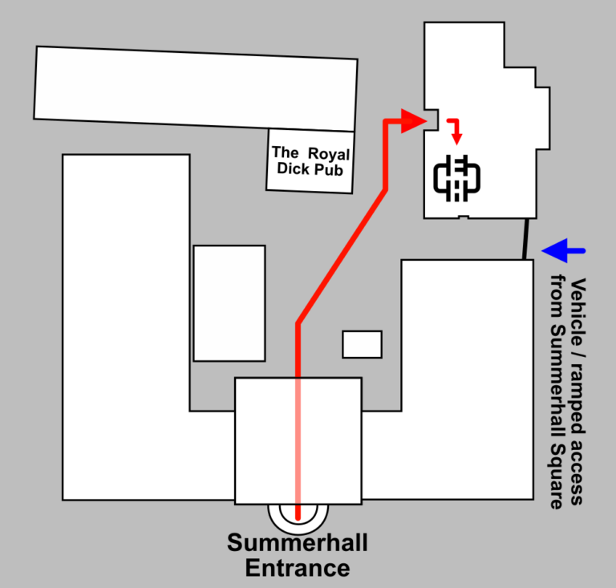

We're open to the public every Tuesday, 7PM till late.
If you can’t make Tuesday, then any member can accompany you and show you around - just ask through any of our chat platforms.
We're in Summerhall, just at the East edge of the Meadows. You can get directions via:
Any other way, our address is: 1 Summerhall, Edinburgh, EH9 1PL
The front entrance is open until 9pm, but requires going up stairs. The accessible entrance can be found on the South side - from the street confusingly named 'Summerhall Square'.

From the front entrance: Go through to the courtyard, towards the Royal Dick pub and look to your right hand side. The Hacklab is on the ground floor of the grey concrete building. Follow this building for about 10 meters to your left, and you will arrive at a door with an entry buzzer marked Hacklab.
From the accessible entrance: Go into the courtyard and immediately turn right. The Hacklab is on the ground floor of the grey concrete building. Follow this building for about 10 meters further, and you will arrive at a door with an entry buzzer marked Hacklab.
You can also ask at Reception - they should be able to point you in our direction. If you have any problems getting in or need some directions, please give us a call on +44 131 516 6856.